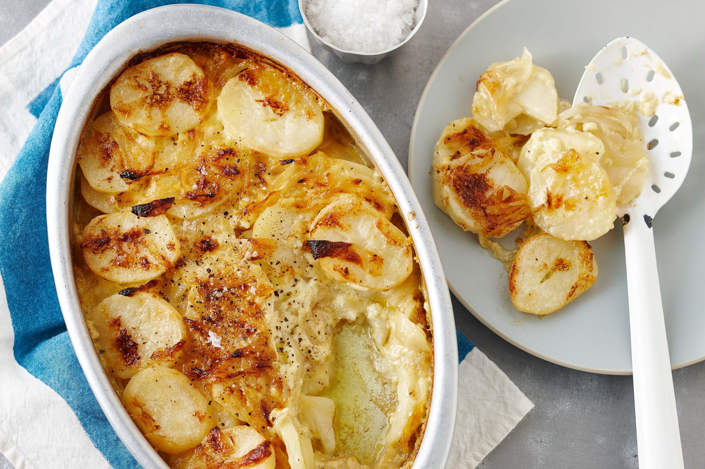

Scalloped Potatoes

Description
Nice creamy scalloped potatoes. Not fucked like Barb's.
Ingredients
- 2 tbsp butter
- 3 tbsp all-purpose flour
- 1 tsp salt
- 1/4 tsp pepper
- 1 1/2 shredded (reduced fat) cheddar chease
- 2 pounds (about 4 cups)(red) potatoes, (peeled) and thinly sliced
- 1 cup thinly sliced onions, divided
Steps
- Preheat oven to 350 degrees. In a small saucepan, melt butter; stir in flour, salt and pepper until smooth. Gradually whisk in milk. Bring to a boil, stirring constantly; cook and stir until thickened, about 2 minutes. Remove from heat; stir in cheese until melted.
- Coat an 8-in. square baking dish with cooking spray. Place half of the potatoes in dish; layer with 1/2 cup onion and half of the cheese sauce. Repeat layers.
- Bake, covered for 50 minutes. Uncover; bake until bubbly and potatoes are tender 10-15 minutes longer.